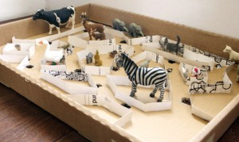

In this game, the marble has to roll on the roads without falling through the holes. To achieve this it is necessary to move the entire cover of cardboard.

And this is the way how the game ended up the next day: a zoo! ;-)



The school calendar. The lid of the milk indicates the day we have today. In this way we practice the days of the week in english,…
Read more →

Crazy figures from cork with all accessories that you can imagine.
Read more →
Tower of numbers Each roll of toilet paper has a number. You have to make a tower putting the numbers in order. If you put a…
Read more →
Here you can see Lluna firing papers with a rubber band.
Read more →
In a cardboard cap you have to cut a Zigzag as you see in the first photo. Then you have to cut fishes (all the same…
Read more →